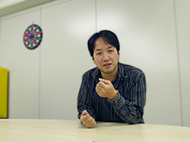

プロジェクトを進める上で、何が一番大変でしたか？
どんなところで苦労されましたでしょうか？
何と言っても一番大変だったのは“メモリ”です（笑）。
今回は前作より3Ｄの表現とかが格段に増えたでしょう？！
それらを実現するためにサウンドは前作比較で全容量を減らし、更に虎の子のメモリ読込量をゲームシステムのために1割ほど献上しました。
前回も厳しい制限の中、長沼くんがいい仕事をしてくれたんですが、今回は更に厳しい環境で、でもレベルを落としてお客さんをガッカリさせてはいけない…。
そんな中、当初はクリエイターがみんな多忙で、やっとのことで今のメンバーを集めて作り出した、という、ほんと始まった頃は風速15ｍ以上の向かい風がずっと吹いてた感じでしたね。いつも楽観的な僕も正直まずいと思ってましたし、パートナー達はよく引き受けてくれたな、って今でも感謝してます。
逆に開発終盤にはいい感じになってきて、例えばROM容量の空きを嗅ぎ付けてオープニングにストリーム曲を持ってこれたりと、一転して“攻め”の部分も作れました。
専門用語使って判りにくくてすいませんが、とにかくサウンドが少しでもよくなるよう、暗躍するのが僕の仕事です（笑）。
この仕事をしていて良かったと思うときはどんなときですか？
どんなときが楽しいですか？
開発終盤の頃にサウンドが組み込まれてきて全体が明らかになってきて、「このゲームいいじゃん！」と思える瞬間は楽しいですね。
あと、自分はオーケストラの曲が大好きなんですが、機会はなかなかないですけど、オケ物を作ってる時は遊んでる時以上にウキウキしてるときがありますね。ただ時間を掛けてもいいメロディーが出てこない時とかは自分に絶望しますし、楽しい反面躁鬱(そううつ)が激しいです…。
セガに入ったきっかけ、動機などを教えていただけますでしょうか？
実は初めはゲーム業界に入ろうって思ってなくて、就職活動中はいろいろ回って、学科の就職先として当時主流だった金融業界に入ろうかな、と思ってました。比較的時間もあったほうなので、教員免許とかも取ったりして。
当時はまだインターネットがなくて、斡旋(あっせん)業者を通していろんな業界の資料を片っ端から集めてたんですが、そんな中で大手企業で音楽を仕事にできる、っていうのを初めて知りました。
そこで調べてみたら、この業界は面白そうだな、ってことになっていろいろ受けてみました。
セガがいいなって思ったのは、ソニックの顔がカッコイイと思ったからで。こう言うとあきれられてしまいそうですが（笑）。
当時すでに社内に音楽スタジオがあって、サウンドにとって非常に魅力的に映ったことを覚えてます。
セガに入って、どのようなことがやりたいと思っていましたか？
学生時代、曲を作るのが大好きだったので、最初はとにかく曲が作りたい、って思ってました。
学生時代は、どのようなことに力を入れていましたか？
どのように過ごされていましたか？
第18回の大隅ディレクターの話を読むと、自分のことを語るのが恐ろしい…（笑）。
大隅さん、普段はおとなしくてとてもあんな風にシャウトしたり、ハーレー乗ったりするような人に見えないんですよ。いやぁ、びっくり…って、話が思いっきりそれましたね（笑）。
大学は数学を専攻していて、最初の2年、そう、思いっきり遊べる時に「マジメに大学院行こう」って勉強してましたね。しかし、大学の勉強は難しい…ってことで挫折気味になってだんだん好きな音楽にシフトしていきました。
音楽はバンドを組んだりはしていませんでしたが、作詞作曲の同人誌を通して仲間ができて、当時はまだカセットだったマルチトラックレコーダーを使って歌モノ曲とか作ってました。もう3年生になってましたから、この1年がなかったら今絶対ここにいなかったですね。そう思うとほんとに奇遇な感じがします。